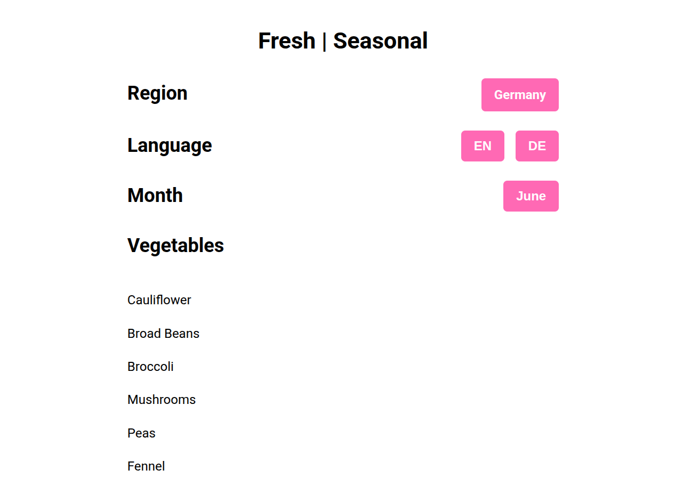
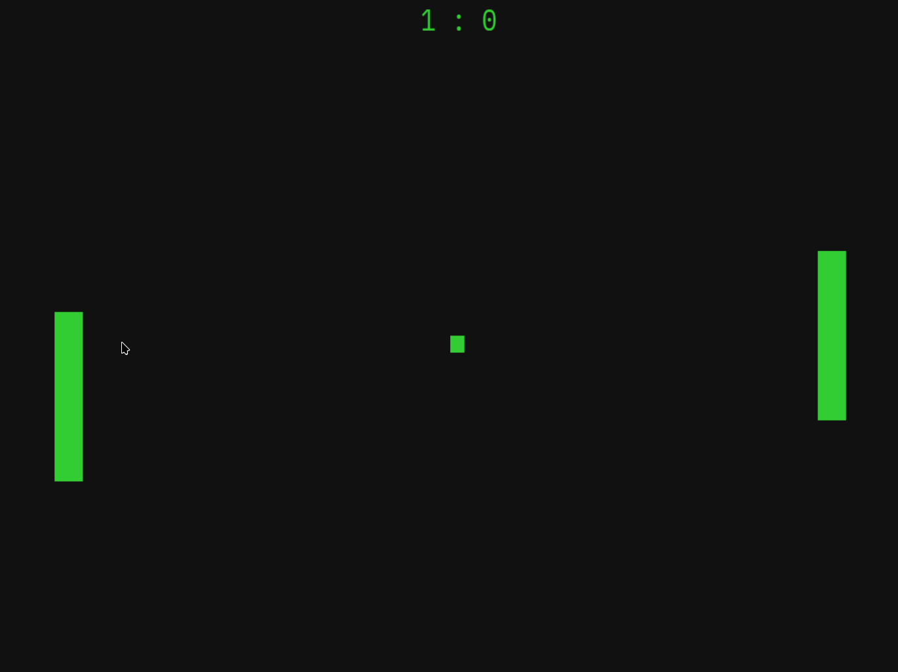
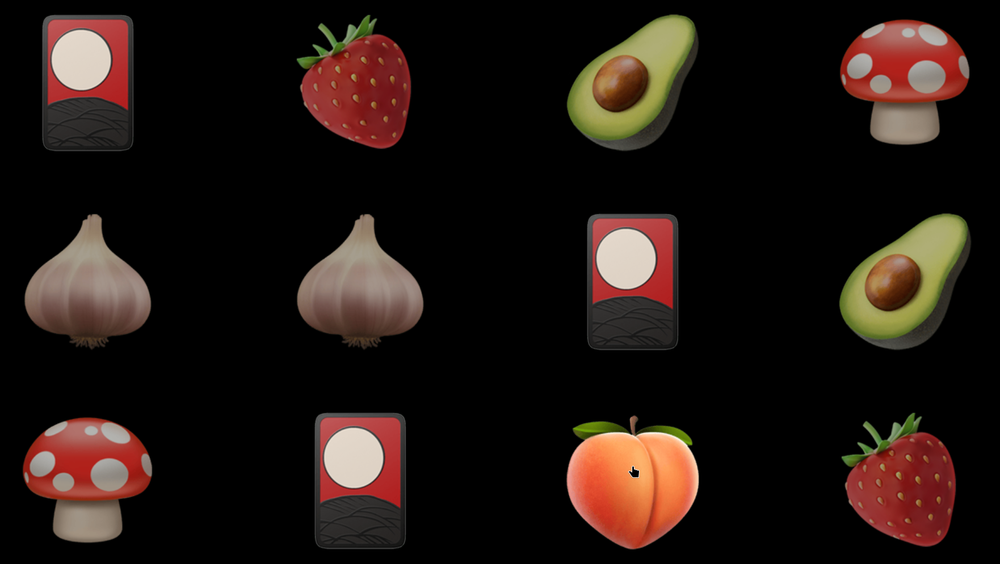
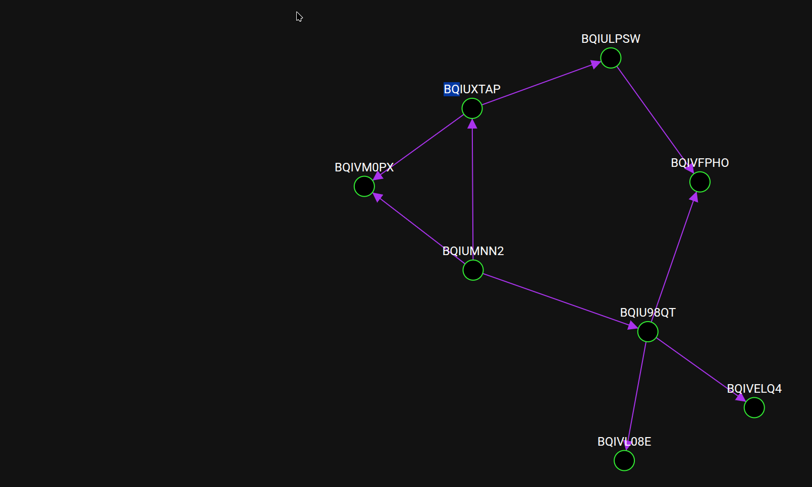

Hi, I'm Ulf.
I'm a software engineer who came in sideways. I learned BASIC on a C64, taught myself C++, and fell into the web out of necessity. I don't love buzzwords, but I do love systems — especially the ones that surprise me. I care more about clarity than cleverness, and more about making things legible than making them cool. To me, software is both communication and construction — and I'm most at home when it's treated as both.
What I do
In June 2025, I left my full-time role to find a better fit — technically and culturally. I work best in environments where engineers are trusted to own problems and given the autonomy to solve them well. Since then, I've been deepening my skills, experimenting with different tools and frameworks, and building a job application manager in Go. I'm now looking for a team that values thoughtful engineering, clarity, and continuous improvement.
I have a strong background in web development across both frontend and backend. I enjoy working with TypeScript, React, and Node.js, but I'm comfortable with a wide range of languages and frameworks. I like building things. And I like improving how we build them.
In my free time, I code a lot. My current project is a web app to help users manage job applications. It's built in Go with Templ for server-side rendering, using JSON for persistence.
What I did
I've worked as a software engineer for about five years, mostly in web development.
I started out as a full-stack developer, building a web application for ecologists to visualise simulated pollen distribution. I created a pipeline using C++, PHP, HTML, and JavaScript that let users map maize fields and simulate particle spread in the browser. The simulation engine was based on AUSTAL, a model for low-density particle dispersion.
It was my first experience with web development. And I loved it.
My biggest lesson back then: don't cook your own TIFF images. There are libraries for that.
What I build
I like building things — often more than finishing them. Recently I prototyped over twenty iterations of a web app just to explore the web development landscape. I tried different languages, frameworks, rendering modes, state management approaches, routing strategies, and architectural styles. Here's some of what I learned:
- There's rarely a reason to use JavaScript over TypeScript. Exceptions are early-stage prototypes where raw speed outweighs the benefits of types and tooling.
- React is a powerhouse for UIs. Next.js is currently the best framework for building TypeScript-first applications. It's not perfect and it nudges you into Vercel's ecosystem, but it offers excellent UX with a DX that's hard to beat.
- React isn't the only way. Vanilla JS is still viable, but frameworks help — a lot. Vue and Nuxt are great alternatives. I especially appreciated Nuxt's auto-import features.
- Try Svelte if you haven't. It's a joy to work with. I haven't used SvelteKit yet, so I can't compare it to Next.js or Nuxt, but the client-side experience is excellent. The compiler does a lot for you while keeping the language transparent.
- Phoenix LiveView is a standout. It's the most exciting thing I've tried in recent years. I didn't fully commit only because of the Elixir learning curve and some MVC-related indirection borrowed from Rails. But LiveView is a real innovation.
- Laravel and Spring Boot are solid, but not for me. They rely too much on “magic” for my taste, which makes debugging painful. While React and Phoenix also have their quirks, their advantages outweigh the costs — unlike Laravel and Spring Boot, which I found less compelling.
Right now, my job application manager app is implemented in Go using Templ for server-side rendering. Offloading logic to the server simplifies things so much that I haven't missed frontend frameworks. Since most of the logic is in Go, I didn't even need TypeScript. I've also opted out of SPA entirely — the Transition API covers most of what I need, and the difference is hardly noticeable in dev. Deployment might break the illusion, but I'll cross that bridge when I get there.
What I finished
There are a couple of projects I finished and deployed. You might actually like them.
Fresh
A mobile-first web app that just shows what's regionally in season (in Germany).

Deployed here and hosted on GitHub.
's vanilla. If you're new-ish to web development take a peek. The code is simple and straightforward. It's a pretty good example for a beginner project.
Peng
A simple Pong clone built with Javascript and HTML5 Canvas.

Deployed here and hosted on GitHub.
It's Pong. The cult classic from ancient times. Vanilla again. And if you're curious about game development in the browser, this might be a quick start for you. Tried to keep it straight and simple.
Memoji
Memory with emojis. A simple memory game.

Deployed here and hosted on GitHub.
Another game for the browser. And also vanilla again. This was just practicing HTML5, CSS Grid and other stuff while having fun.
Wire2
A homework assignment for an application. A web view to create nodes and connect them.

Deployed here and hosted on GitHub.
This was a homework assignment for an application. I had to create a web view to create nodes and connect them. It was a fun exercise in building a simple UI around the idea of directed graphs. I learned a lot about breath-first search and depth-first search algorithms, as well as how to represent graphs in JavaScript. I also implemented a cycle detection algorithm to prevent infinite loops when connecting nodes and created a visual representation of the graph structure using D3.js - with physics! Grab a node and move it around, and the graph will adjust itself.